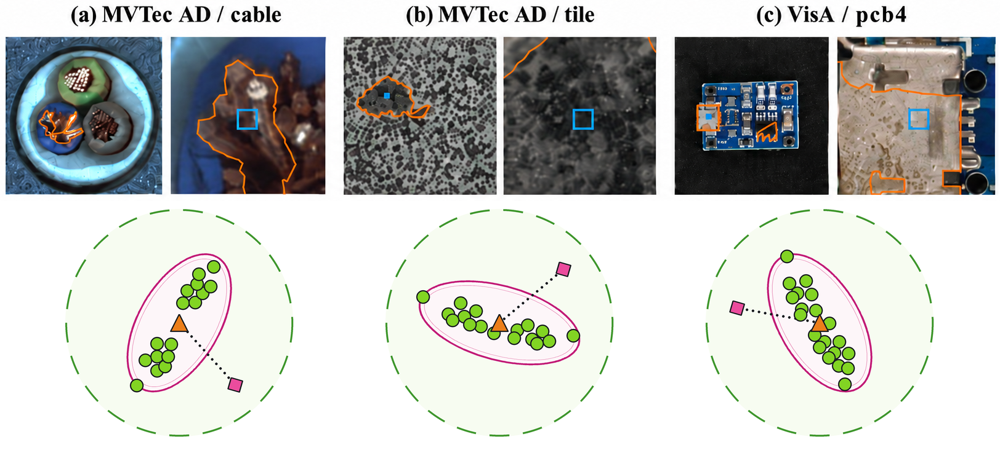

01
Local feature geometry
Use the neighborhood around each query rather than a single global distance, with attention to covariance, low-rank structure, and numerical stability.
Computer vision / representation learning / visual inspection
I study how local feature geometry can make visual inspection more precise, transparent, and useful in the real world.


Current directionBuilding evidence-aware tools for feature-space inspection.
/ 01
A small research practice
My work sits between machine learning research and dependable visual systems. The recurring question is simple: when a model sees something unusual, can we explain what changed in the local evidence?
This page is a living index of current research threads, prototypes, and notes. It intentionally separates working ideas from validated results.
/ 02
Research directions
Three connected questions guide the work.
Use the neighborhood around each query rather than a single global distance, with attention to covariance, low-rank structure, and numerical stability.
Study how a small number of normal support images can still produce meaningful patch-level evidence for industrial inspection.
Keep claims tied to reproducible protocols, traceable inputs, and diagnostics that make a result easier to audit and improve.
/ 03
Selected work
Research, writing, and tools in progress.
A query-adaptive local statistical scoring direction for few-shot industrial anomaly detection.
An audit-first workflow for keeping terminology, experimental scope, and conclusions aligned with available evidence.
A small dependency-free monitoring interface for shared research compute and active experiments.
/ 04
Research notes
Short statements to keep the work honest.
Good research language should describe what the implementation actually does.
Rank, conditioning, regularization, and stable computation belong beside the score.
Separate current evidence from the next experiment that would change the answer.
Keep in touch